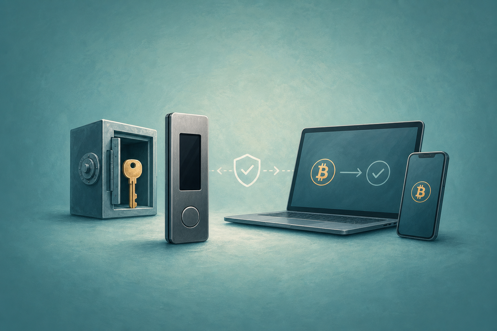

มูลค่า
ยิ่งมาก ยิ่งควรจริงจัง
คล้ายการถามตัวเองว่ามีทองมากเท่าไรจึงควรลงทุนซื้อตู้เซฟ
ช่วยป้องกันการแฮ็กทางออนไลน์
ถ้าเราใช้คอมพิวเตอร์หรือโทรศัพท์มือถือเป็น wallet
seed phrase ของเราก็อยู่ในอุปกรณ์ที่ต่ออินเทอร์เน็ตตลอดเวลา
หากมีช่องโหว่ก็อาจถูกแฮ็กเอา seed phrase ไปได้
hardware wallet ช่วยเก็บ seed phrase ของเราไว้ในอุปกรณ์ที่อยู่ห่างจากอินเทอร์เน็ต ช่วยให้ปลอดภัยจากการถูกแฮ็กออนไลน์

เมื่อไรควรพิจารณาใช้ hardware wallet
ยิ่งมาก ยิ่งควรจริงจัง
คล้ายการถามตัวเองว่ามีทองมากเท่าไรจึงควรลงทุนซื้อตู้เซฟ
ตั้งใจถือยาว ต้องดูแลดี
ความยุ่งยากในการใช้งานคงไม่ทำให้เราเดือดร้อนมากหากไม่ได้ซื้อขายบ่อยๆ
ดูแลเองต้องรับผิดชอบเอง
เมื่อเราดูแลเอง ความผิดพลาดก็เป็นความรับผิดชอบของเราเองเช่นกัน